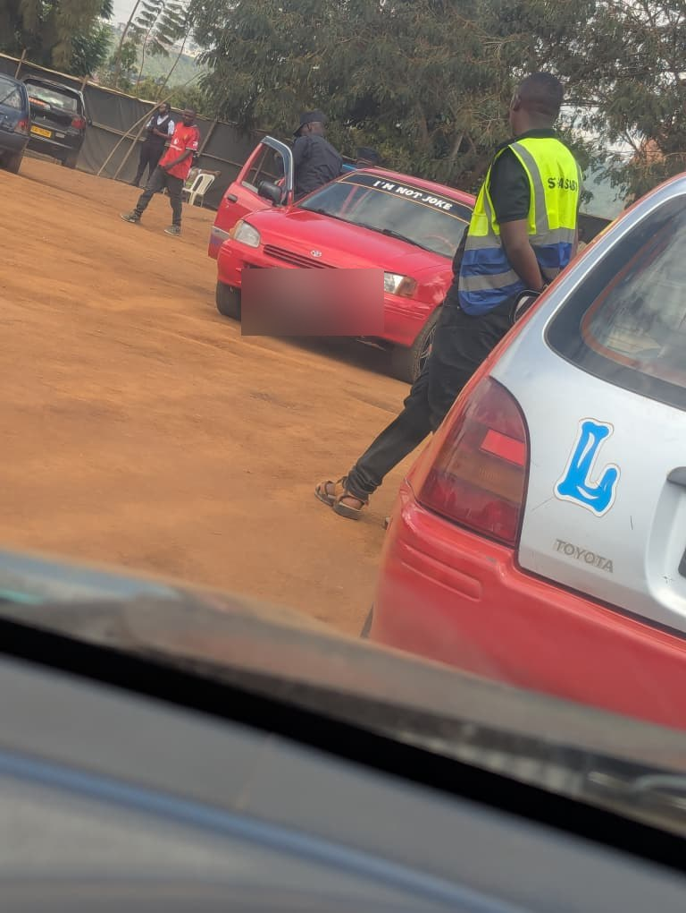

From sitting on my father's lap, gripping a wheel that wasn't really mine, to finally earning my own license — this is what driving means in a country where some people rank a license above a degree, and where my own parents quietly rank knowledge above both.
When I was a child — somewhere between three and five — my dad used to put me on his lap and let me hold the wheel like I was actually driving. I loved it. Crazily. I couldn't wait to grow up so I could drive a car of my own. And man, the way he drove fast made me feel like my dad had something special that other people just didn't have.
Then I grew up. Responsibilities piled on. I was officially too big for dad's lap, and somewhere along the way, that early dream of driving quietly faded into the background.
Even though I was introduced to driving so early, in Rwanda owning a car isn't taken lightly. If anything, it signals real financial standing. And with fuel prices skyrocketing, it doesn't get any easier on a family budget.
So parents, aunties, uncles — they're strict about their cars. In some homes, a teenager driving before the legal age is simply unspoken of. Almost taboo.
On a wider, national level, many people believe that getting your driver's license is more valuable than getting a degree.
My parents land on the opposite end of that belief. They don't really encourage driving. If they catch you spending money to learn, they consider it a bit of a waste of time.
My father usually puts it like this:
If you are really successful, you will be driven — kind of like the president. So chase knowledge instead. Learn.
It's a whole philosophy, really, and one I want to dig into properly another day. But that's the world I was raised in: driving as something almost optional. A skill, not a milestone.
Anyway — enough yapping. After multiple attempts, I finally got my driver's license. And mn, if only you saw the grin on my face😄.
What a privilege to be tired from the things I once thought were out of reach. To be woken up early to take the kids to school on a random morning. Mid-dream, I'd hear someone banging on my window:
“Beniiii twakererewe mama aravuze ngo ngwino udutware”
(Beni!! We're late! Mom said you're driving us!)
Yeah. That loud. I have never been happier to be woken up.
These kids are a bit unserious too, by the way. I used to be in class at 6 AM. Theirs starts at 8 — like, how are you even late?
It feels really good having the responsibility now. And finally, I can talk about driving openly without sounding like that one guy going:
“for some of us driving is just a skill that can be handy when needed, and I like it too.”
But here's the part I actually want to say out loud: making someone feel embarrassed or undermined because they don't yet have a driver's license? That's just wrong.
We are not all looking for the same things in this life. Some people are saving up for a car. Some are saving up for a master's. Some are doing neither and still building lives that matter. None of those paths makes the others less.
Quick one. While I was at the exam site, I spotted a car just sitting in the lot with something painted across the windshield. The line read, ngo “I'M NOT JOKE”. 😂😂😂.

Whoever wrote that deserves a fine of their own 🤦🏾♂️ easied my tension though😂
Here's something that has been sitting on my mind. What would it actually take to get a Rwandan driver's license turned international?
Because mn — anyone who has sat for ours knows we pass with serious skills. The training is no joke. The exam is harder than people give it credit for. By the time you are holding that card, you have earned it. So it'd surely be a win if travelling to another country with this license meant added value: no starting from zero, no being treated like a total beginner, just plug in and drive 😎.
I won't pretend I know the full picture — But I want to learn how it works. And I think it's a fight worth picking up.
To more achievements😎🥂.
Read next: Teaching a Computer to Guess Who Says Yes — my first steps into machine learning.